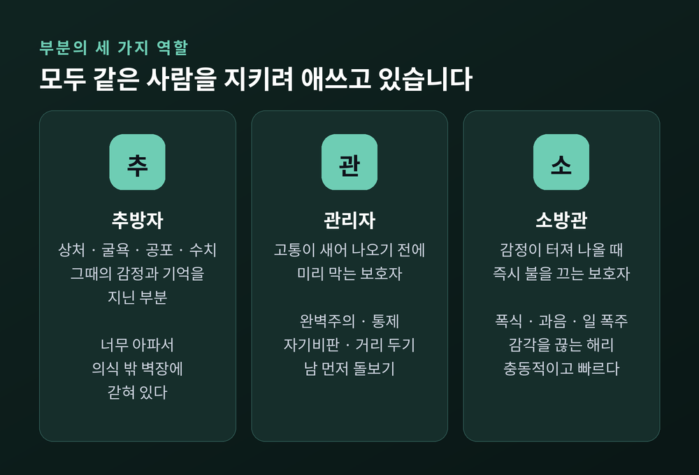
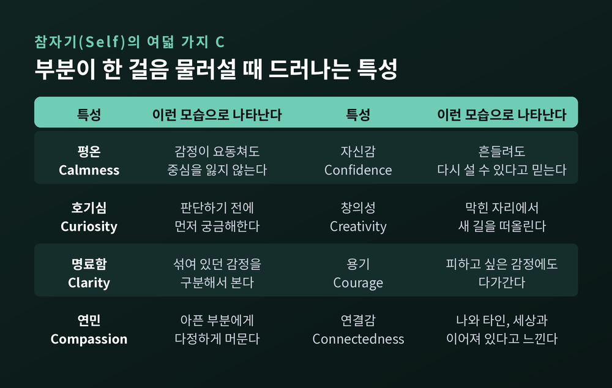
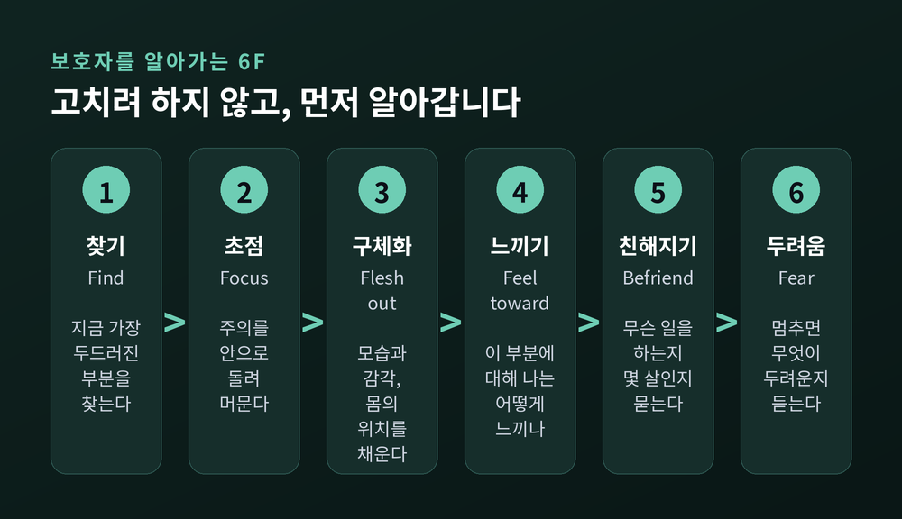
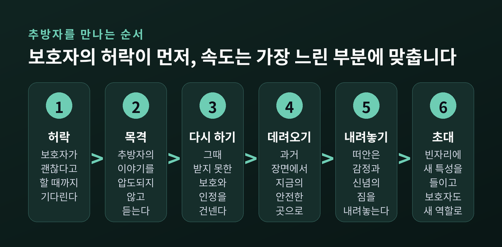
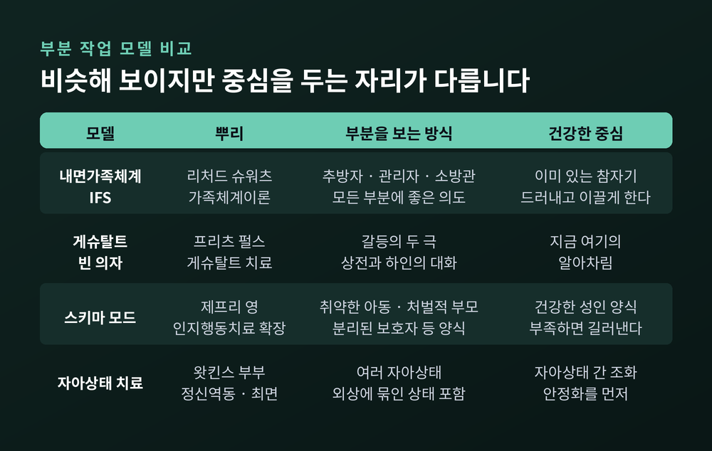
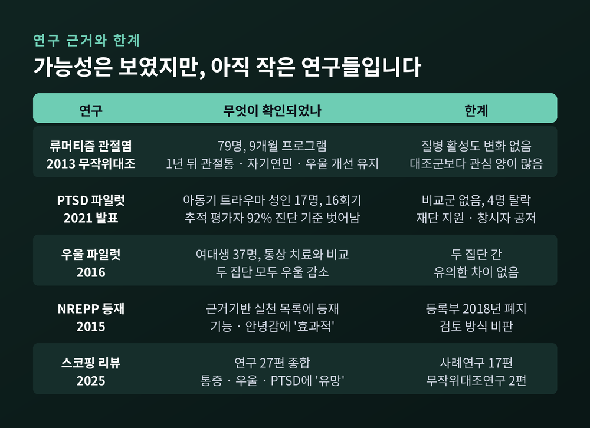

내면가족체계(IFS) 치료, 부분과 참자기로 내적 갈등을 다루는 원리

세 줄 요약
- 내면가족체계(IFS)는 가족치료사 리처드 슈워츠가 가족을 보던 눈으로 한 사람의 마음을 본 데서 출발한 심리치료 모델입니다.
- 마음은 추방자·관리자·소방관이라는 '부분'들과, 손상되지 않은 중심인 참자기(Self)로 이루어져 있다고 봅니다. 목표는 부분을 없애는 것이 아니라 참자기가 부분들과 관계를 회복하는 것입니다.
- 류머티즘 관절염·PTSD·우울 소규모 연구에서 가능성을 보였지만, 무작위대조연구는 아직 두 편뿐이고 트라우마 작업의 안전성 논쟁도 진행 중입니다.
이번 글에서는 내면가족체계 치료, 흔히 IFS라고 부르는 접근을 정리해 보겠습니다. "하고 싶은데 하기 싫다", "화를 내놓고 곧바로 후회한다" 같은 내적 갈등을 이 모델이 어떤 구조로 읽는지, 상담실에서는 어떤 순서로 다루는지 살펴보려 합니다. 연구 근거와 비판도 함께 적었습니다.
가족치료사가 한 사람의 마음속에서 '가족'을 발견하기까지
리처드 슈워츠는 원래 체계론적 가족치료를 훈련받은 치료사였습니다.
1980년대 초, 그는 시카고의 한 청소년 연구기관에서 일하고 있었습니다. 그때 내담자들이 자기 내면을 이상한 방식으로 설명하기 시작했습니다. "제 안의 한 부분은 이렇게 말하고, 다른 부분은 저렇게 말해요." 섭식장애 내담자들에게서 특히 자주 들었던 표현이라고 합니다.
가족치료사에게 이것은 익숙한 장면이었습니다. 가족 구성원들이 서로 부딪히는 순서를 추적하듯, 그는 마음속 목소리들이 주고받는 순서를 추적하기 시작했습니다.
슈워츠가 남긴 일화 하나가 이 모델의 출발점을 잘 보여줍니다.
한 내담자가 자신에게 늘 "넌 어차피 안 돼"라고 말하는 비관적인 목소리에게 물었습니다. 왜 그런 말을 하느냐고. 그러자 그 목소리가 답했습니다. 위험을 감수했다가 상처받지 않게 하려고 그런다고. 공격처럼 들리던 목소리가 사실은 지키려는 쪽이었던 셈입니다.
그런데 내담자는 그 비관자에게 화를 냈습니다. 슈워츠는 그 분노가 내담자 자신이 아니라 비관자와 늘 싸워온 '또 다른 부분'이라는 것을 알아챘습니다. 그 부분에게 잠시 물러나 달라고 청하자, 분노가 거짓말처럼 가라앉았습니다. 이어서 차분하고 다정한 목소리로, 그동안 애써준 비관자에게 고맙다고 말했습니다.
이때 말하고 있는 것은 누구냐고 묻자 내담자들은 비슷하게 답했습니다. 다른 목소리 같은 부분이 아니라, 원래의 나라고.
그는 이 모델이 새로운 발견은 아니라고 스스로 적었습니다. 프로이트의 이드·자아·초자아, 교류분석의 자아상태, 인지치료의 도식도 마음의 다중성을 다뤘습니다. 다만 이 부분들이 서로 어떻게 관계 맺는지에 주목한 모델은 드물었다고 봤습니다.
그래서 이름이 '내면 가족 체계'입니다. 이름과 달리 가족 전체를 상담하는 방식이 아니라, 주로 한 사람을 만나는 개인 심리치료입니다.
추방자, 관리자, 소방관 — 마음을 지키는 세 가지 역할
이 모델은 마음을 여러 '부분(parts)'의 체계로 봅니다. 그리고 부분들이 맡는 역할을 크게 셋으로 나눕니다.
첫째, 추방자(exile). 과거에 상처받고, 굴욕을 겪고, 겁먹고, 수치를 느꼈던 순간의 감정과 기억과 감각을 지닌 부분입니다. 너무 아프기 때문에 다른 부분들이 이들을 의식 밖으로 밀어냅니다. 내면의 벽장에 갇혀 있다는 뜻에서 '추방자'라고 부릅니다.
둘째, 관리자(manager). 추방자의 고통이 새어 나오지 않도록 미리 막는 부분입니다. 남과 너무 가까워지지 않게 거리를 두고, 외모나 성과를 끊임없이 비판해 더 잘하게 만들고, 자기 욕구 대신 남을 돌보는 데 집중하게 합니다. 완벽주의나 통제, 쉬지 못하는 부지런함으로 나타나기도 합니다.
셋째, 소방관(firefighter). 관리자의 방어가 뚫려 추방자의 감정이 밀려올 때 뛰어드는 부분입니다. 불길을 최대한 빨리 끄는 것이 목표라 충동적입니다. 폭식, 과음, 일에 대한 폭주, 멍하게 감각을 끊어버리는 해리가 흔한 소방관의 방식입니다.
관리자와 소방관을 묶어 '보호자'라고 부릅니다. 하나는 미리 막고, 하나는 사후에 끕니다.

가상의 예를 하나 들어보겠습니다. 특정인의 이야기가 아니라 흔한 패턴을 모아 만든 장면입니다.
30대 직장인이 회의에서 가벼운 지적을 받았습니다. 그날 밤 그는 새벽까지 보고서를 고칩니다. 관리자가 움직인 것입니다. "다시는 저런 말 듣지 않게 완벽하게 해야 해." 그런데 며칠 뒤, 비슷한 지적을 또 받자 이번에는 퇴근길에 술을 들이붓습니다. 소방관이 불을 끄러 나온 것입니다.
두 행동은 정반대처럼 보입니다. 하지만 이 모델의 눈으로 보면 둘 다 같은 것을 지키고 있습니다. 어린 시절 "넌 늘 부족해"라는 말을 들으며 움츠러들던 추방자 한 명을.
여기서 이 모델의 가장 중요한 전제가 나옵니다. 모든 부분은 좋은 의도를 가지고 있다. 방식이 해로울 수는 있어도, 부분 자체가 나쁜 것은 아니라는 뜻입니다. 그래서 부분과 싸우거나 억지로 없애려 하지 않습니다.
부분들은 서로 편을 먹기도 하고 부딪치기도 합니다. 두 부분이 각자 상대가 너무 극단적이니 자기도 물러설 수 없다고 믿는 상태를 '양극화'라고 부릅니다. "해야 해"와 "하기 싫어"가 끝없이 줄다리기하는 내적 갈등이 대표적입니다.
부분이 아닌 자리, 참자기와 여덟 가지 C
부분들만 있다면 마음은 늘 전쟁터일 것입니다. 이 모델은 여기에 하나를 더 놓습니다. 참자기(Self)입니다.
참자기는 부분이 아닙니다. 모든 사람의 중심에 원래부터 있으며, 트라우마로도 손상되지 않는다고 봅니다. 심한 학대를 겪은 사람도 예외가 아니라는 것이 슈워츠의 관찰입니다. 다만 처음에는 그 자리에 닿기가 매우 어려울 수 있습니다.
그렇다면 이 자리는 어떻게 알아볼까요. 슈워츠는 내담자들이 그 중심에 가까워질 때 보이는 특성을 형용사로 적다 보니, 영어 C로 시작하는 단어가 반복되었다고 말합니다. 그래서 8C입니다.
- 평온(calmness)
- 호기심(curiosity)
- 명료함(clarity)
- 연민(compassion)
- 자신감(confidence)
- 창의성(creativity)
- 용기(courage)
- 연결감(connectedness)

예전의 많은 모델은 '자아'나 '어른'을 튼튼하게 만들어 다른 부분들을 관리하고 통제하는 데 초점을 두었습니다. 이 모델은 다르게 봅니다. 우리가 흔히 '나'라고 믿는 통제하는 목소리조차 관리자 부분들의 모음일 수 있다고 말합니다. 목표는 통제가 아니라, 섞여 있던 부분들을 조금씩 떼어내 참자기가 드러나게 하는 것입니다.
이 '섞임(blending)'이라는 개념이 중요합니다. 분노한 부분과 섞여 있을 때 우리는 "나는 화났다"고 느낍니다. 떨어져 나오면 "내 안의 한 부분이 화가 났구나"라고 볼 수 있습니다. 차이는 작아 보이지만, 감정에 휩쓸리는 것과 감정을 곁에서 바라보는 것의 차이입니다.
슈워츠는 이렇게 중심이 이끄는 사람을 '폭풍 속의 나'라고 표현했습니다. 감정이 요동칠 때도 지금 흔들리는 것은 내 일부이고 곧 가라앉을 것임을 아는 상태입니다.
한 가지는 짚어둘 만합니다. 이 중심을 어떻게 이해할지는 해석이 갈립니다. 감정 반응을 압도되지 않고 관찰하는 심리 상태로 설명하는 쪽이 있는가 하면, 슈워츠의 후기 저작은 이를 영적인 본질로까지 확장해 비판을 받기도 했습니다.
부분과 대화하는 여섯 걸음, 6F
그렇다면 실제로 부분과는 어떻게 만날까요. 보호자를 알아가는 과정은 흔히 여섯 단계로 정리됩니다. 모두 F로 시작해 6F라고 부릅니다.
- 찾기(Find) — 지금 가장 두드러진 부분을 몸이나 마음에서 찾습니다.
- 초점 맞추기(Focus) — 주의를 안으로 돌려 그 부분에 머뭅니다.
- 구체화하기(Flesh out) — 어떤 모습인지, 몸 어디에서 어떤 감각으로 느껴지는지 채워 갑니다. 선명한 이미지가 떠오르지 않아도 괜찮습니다. 가슴의 답답함 같은 느낌도 충분합니다.
- 느끼기(Feel toward) — "이 부분에 대해 나는 지금 어떻게 느끼나?"를 묻습니다.
- 친해지기(Befriend) — 이 부분이 나를 위해 무슨 일을 하고 있는지, 몇 살쯤인지 알아갑니다.
- 두려움 탐색(Fear) — "이 일을 멈추면 무슨 일이 생길까 봐 두려운가?"를 묻습니다.

실무자들이 가장 중요하게 꼽는 것은 네 번째 질문입니다. 답이 평온함이나 호기심, 연민이라면 참자기가 대화를 이끌고 있다는 신호입니다. 반대로 짜증이나 두려움, 조급함이 섞여 있다면, 그 감정도 또 다른 부분이라는 뜻입니다. 그 부분에게 먼저 인사를 하고, 잠시 옆에서 지켜봐 줄 수 있겠느냐고 청합니다.
앞의 가상 사례에 대어 보면 이렇습니다.
새벽까지 보고서를 고치게 만드는 부분을 찾아 초점을 맞추니 어깨가 딱딱하게 굳는 느낌으로 다가옵니다. 그 부분이 지긋지긋하다는 마음이 먼저 올라온다면, 그 '지긋지긋함'이 또 하나의 부분입니다. 그 마음이 한 걸음 물러난 뒤에야 궁금함이 생깁니다. 그렇게 묻다 보면 이 관리자가 스스로를 열 살쯤으로 여기고 있고, 멈추면 다시 무시당할까 봐 두려워한다는 것을 알게 될지도 모릅니다.
중요한 점은 이 과정이 부분을 설득하거나 고치려는 단계가 아니라는 것입니다. 목표는 알아가는 것입니다. 부분은 자신이 이해받았다고 느낄 때 스스로 힘을 뺀다고 봅니다.
보호자의 허락이 있어야 닿는 곳, 추방자
보호자와 신뢰가 쌓이면, 그 보호자가 지키던 추방자에게 다가갈 수 있습니다. 여기에는 원칙이 하나 있습니다.
보호자의 허락 없이는 추방자에게 가지 않는다.
보호자를 무시하고 상처로 곧장 파고들면 반발이 생길 수 있다고 봅니다. 드물게는 자해나 자살 충동 같은 격한 소방관 부분이 깨어날 수도 있습니다. 그래서 이 단계는 느리게 갑니다. 현장에서 자주 인용되는 말이 있습니다. 가장 느린 부분보다 빨리 가지 말라는 것입니다.
허락이 나면 추방자를 치유하는 과정은 대략 이런 순서로 진행됩니다.
- 목격하기 — 추방자가 자기 이야기를 보여주고, 나는 압도되지 않은 채 들어줍니다.
- 다시 하기 — 상상 속 그 장면에 들어가, 그때 필요했지만 받지 못한 보호와 인정을 건넵니다.
- 데려오기 — 추방자를 과거의 장면에서 지금의 안전한 곳으로 데려옵니다.
- 짐 내려놓기 — 추방자가 오래 지고 있던 감정과 신념을 빛이나 물, 바람 같은 이미지에 실어 내려놓습니다.
- 초대와 통합 — 비워진 자리에 새로운 특성을 초대하고, 할 일이 달라진 보호자들도 새 역할을 찾도록 돕습니다.

여기서 '짐(burden)'이라는 말이 핵심입니다. "나는 사랑받을 가치가 없다" 같은 믿음은 부분의 본래 성질이 아니라, 상처 때문에 떠안은 짐이라고 봅니다. 떠안은 것이니 내려놓을 수도 있다는 논리입니다.
지지자들은 이 과정이 뇌가 오래된 정서 기억을 갱신하는 '기억 재공고화'와 닮았다고 설명합니다. 다만 이 설명을 직접 검증한 연구는 아직 확인되지 않았습니다.
게슈탈트, 스키마, 자아상태 치료와 무엇이 다른가
마음을 여러 부분으로 보는 치료는 이것만이 아닙니다. 슈워츠 스스로도 게슈탈트 치료의 빈 의자 기법 등을 선구로 꼽았습니다. 비슷해 보이는 세 모델과 나란히 놓으면 차이가 선명해집니다.
게슈탈트 빈 의자. 프리츠 펄스의 게슈탈트 치료에서 나온 기법입니다. 두 의자를 놓고 내적 갈등의 두 극을 오가며 직접 말하게 합니다. "해야지"라고 다그치는 상전(top dog)과, 이런저런 핑계로 버티는 하인(underdog)의 대화가 대표적입니다. 목표는 지금 여기에서 그 갈등을 생생하게 알아차리는 것입니다.
스키마 모드. 제프리 영의 심리도식치료에서 쓰는 개념입니다. 취약한 아동, 처벌적 부모, 분리된 보호자 같은 '양식'으로 마음 상태를 나눕니다. 중심에는 '건강한 성인' 양식이 있습니다. 차이는 이것입니다. 내면가족체계는 참자기가 이미 있다고 보고 그것을 드러내려 하는 반면, 스키마 치료는 건강한 성인이 발달하지 못했다면 치료 관계를 통해 적극적으로 길러내려 합니다.
자아상태 치료. 1970년대 존·헬렌 왓킨스 부부가 정신역동과 최면을 결합해 발전시켰습니다. 해리를 겪는 내담자와의 최면 작업에서 자랐고, 외상 기억을 다루기 전에 안정화를 먼저 충분히 할 것을 강조합니다.

네 모델은 공통점도 많습니다. 모두 마음을 하나의 목소리로 보지 않고, 부분들이 대화하게 만들며, 의자나 심상 같은 체험적 기법을 씁니다.
내면가족체계만의 색을 꼽자면 두 가지입니다. 부분들 사이의 관계를 하나의 체계로 읽는다는 것. 그리고 손상되지 않은 참자기가 수동적 관찰자가 아니라 체계를 이끄는 능동적 리더라고 본다는 것입니다.
연구는 어디까지 말해주는가
인기에 비해 근거는 아직 얇은 편입니다. 확인할 수 있는 주요 연구를 옮겨 봅니다.
류머티즘 관절염 연구(2013). 환자 79명을 9개월간 이 모델 기반 프로그램을 받는 집단 39명과, 질환 교육 자료를 우편으로 받는 대조군 40명에 무작위로 배정했습니다. 치료 직후 전반적 통증과 신체 기능이 더 좋아졌고, 1년 뒤에도 자가 평가 관절 통증, 자기연민, 우울 증상의 개선이 유지되었습니다.
그러나 같은 논문이 밝힌 한계도 분명합니다. 전반적 통증과 기능의 개선은 1년 뒤 유지되지 않았습니다. 불안과, 의사가 측정한 질병 활성도에서는 개선이 없었습니다. 개입 집단은 개인 15회기와 집단 12회기를 받은 반면 대조군은 1시간 모임과 우편 자료가 전부였습니다. 저자들도 이 '관심의 양' 차이가 결과에 영향을 줬을 수 있다고 적었습니다.
PTSD 파일럿 연구(2021년 발표). 여러 형태의 아동기 트라우마를 겪은 PTSD 성인 17명이 90분 회기를 16주 받았습니다. PTSD와 우울, 해리 증상이 줄었고, 1개월 추적 평가를 받은 사람의 92%가 더 이상 PTSD 진단 기준을 충족하지 않았습니다.
인상적인 수치입니다. 하지만 비교군이 없는 연구입니다. 시간이 흐른 효과나 기대 효과와 치료 효과를 구분할 수 없습니다. 17명 중 4명이 중도에 빠졌다는 점, 연구비를 이 모델의 자매 재단이 댔고 창시자가 공저자였다는 점도 함께 봐야 합니다. 연구진 스스로도 예비 결과이며 효능 시험이 필요하다고 밝혔습니다.
우울 파일럿 연구(2016). 우울한 여대생 37명을 이 모델 또는 통상 치료(인지행동치료나 대인관계치료)에 배정했습니다. 두 집단 모두 우울이 줄었고, 개선의 크기와 속도에 유의한 차이는 없었습니다.

전체 그림은 2025년 스코핑 리뷰가 잘 보여줍니다. 조건에 맞는 연구 27편 중 17편이 사례연구였고, 무작위대조연구는 두 편이었습니다. 리뷰는 만성 통증, 우울, PTSD에서 "유망하다"고 평가하면서도, 효능을 확립하고 금기를 확인하려면 더 엄격한 대규모 연구가 필요하다고 결론지었습니다.
2015년 미국 약물남용정신건강서비스청(SAMHSA)의 근거기반 실천 등록부(NREPP)에 올랐다는 사실도 자주 인용됩니다. 다만 이 등록부는 2018년에 폐지되었고, 당시 검토 방식에도 비판이 있었습니다.
조심해야 할 지점들
비판은 크게 두 갈래입니다.
첫째는 근거와 확산 속도의 불균형입니다. 2024년 미국심리학회 산하 심리치료 분과 소식지에 실린 글은, 개발된 지 30년이 된 모델치고 근거 기반이 놀랄 만큼 작다고 지적했습니다. 그 사이 사용은 빠르게 늘었습니다. 필자들의 조사로는 2024년 4월 기준 한 치료자 검색 사이트에서만 4만 5천여 명이 이 모델을 쓴다고 밝혔고, 연구되지 않은 영역까지 적용이 넓어지고 있다고 우려했습니다.
둘째는 안전성입니다. 기존 연구들은 정신증 환자를 제외했습니다. 현실 검증에 어려움이 있는 사람에게 자신을 여러 부분으로 나눠 보라고 권하는 것은 오히려 혼란을 줄 수 있습니다. 복합 트라우마와 해리를 다룰 때는 흩어진 경험을 조심스럽게 통합하는 단계적 접근이 기본입니다. 부분에 이름을 붙이고 대화시키는 작업이 일부 사람에게는 분열감을 키울 수 있다는 경고입니다. 거짓 기억 유도를 둘러싼 소송과 언론 보도도 있었습니다.
이에 대해 모델을 대표하는 연구소는 문제가 된 사례들이 모델을 극단적으로 잘못 적용한 것이며, 공식 원칙은 내담자가 안정되기 전에 트라우마를 드러내도록 몰아붙이는 것을 금지한다고 반박했습니다. 양쪽 주장이 모두 있다는 점을 적어 둡니다.
2026년에는 좀 더 근본적인 질문도 나왔습니다. 부분이라는 것이 실제로 존재하는 심리적 실체인지, 아니면 치료에 유용한 '해석의 틀'인지 묻는 논문입니다. 필자는 부분을 발견된 존재가 아니라 자기 자신을 이해하는 하나의 방식으로 다루자고 제안했습니다. 이 모델을 쓰든 쓰지 않든, 새겨둘 만한 관점이라고 생각합니다.
마지막으로 한 가지만 덧붙이겠습니다.
내면가족체계가 건네는 가장 큰 선물은 기법보다 시선일지 모릅니다. 스스로를 탓하게 만드는 목소리, 참지 못하고 터져 나오는 행동을 '고쳐야 할 결함'이 아니라 '너무 오래 혼자 애쓴 보호자'로 다시 보게 한다는 점입니다.
"없애야 할 부분은 없고, 아직 이해받지 못한 부분이 있을 뿐입니다."
다만 이 글은 모델을 이해하기 위한 소개이지 스스로 치료하는 안내서가 아닙니다. 보호자와 가볍게 인사를 나누는 정도의 자기 성찰은 도움이 될 수 있지만, 추방자의 기억으로 들어가는 트라우마 작업은 혼자 하시지 않기를 권합니다. 해리 경험이 있거나 현실감이 흔들리는 시기라면 더욱 그렇습니다. 오래된 상처나 반복되는 내적 갈등으로 일상이 힘드시다면, 전문 상담기관이나 정신건강의학과, 트라우마 치료 훈련을 받은 전문가와 함께 살펴보시길 권합니다.
내 안의 목소리들이 왜 이렇게 서로 싸우는지 모르겠다고 느끼신다면, 이 모델은 이렇게 답할 것입니다. 그들은 싸우는 게 아니라, 저마다의 방식으로 같은 사람을 지키고 있는 중이라고.